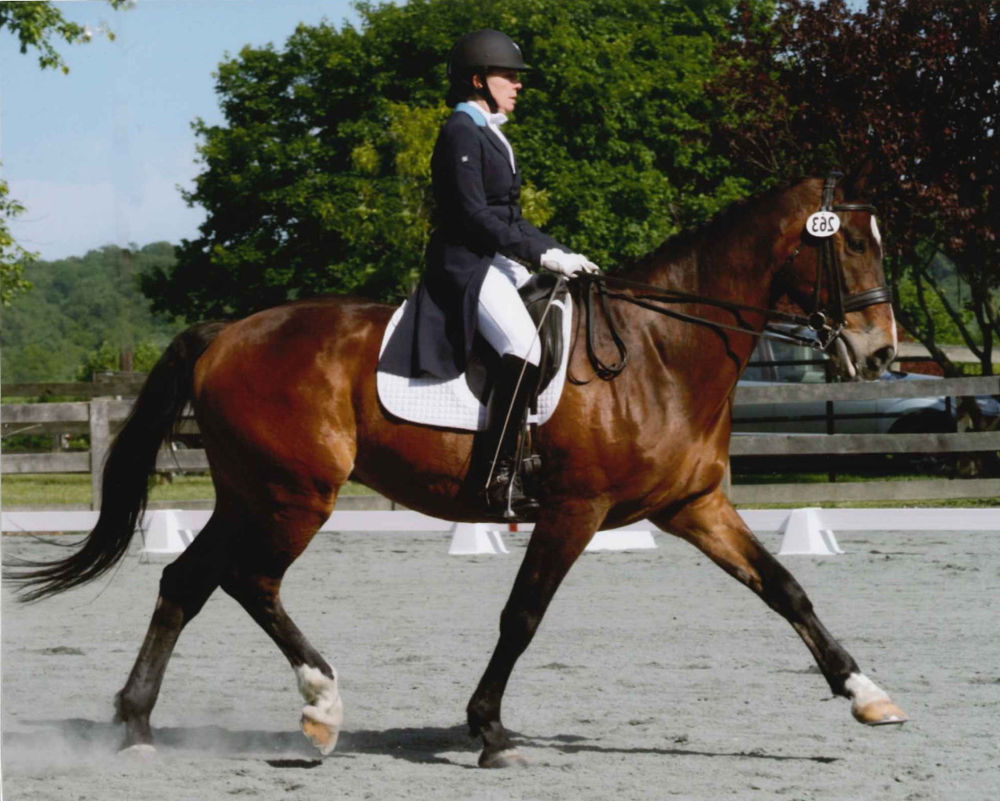

Kissinger Bigatel & BrowerRealtors®
Meet Barb Alpert: A Centre County Native REALTOR® With 30+ Years in Happy Valley
Barb Alpert, REALTOR®, Associate Broker with Kissinger Bigatel & Brower

What does being a REALTOR® actually mean to Barb?
It’s about people, families and their hopes and dreams. It’s a relationship based on trust, knowledge and education. — Barb Alpert, REALTOR®, Associate Broker
For Barb, being a REALTOR® means far more than selling homes. Buying or selling a house is usually tangled up with something bigger — a new job, a growing family, a parent who needs to be closer, a chapter ending. Her job is to make sure the real estate part of that is handled cleanly, honestly and without drama.
A Centre County native with more than 30 years in the business, Barb is an Associate Broker at Kissinger Bigatel & Brower and is fully capable of handling the most complicated transactions — the ones with easements, estates, farm ground, well and septic questions, or three moving parts that all have to close on the same day.
How does a local native help you differently?
Local insight isn’t a slogan — it’s knowing which street floods, which neighborhood turns over every August, which back road is a pleasant fifteen minutes and which is thirty in the snow. Barb brings that depth in two directions:
- For buyers: honest help evaluating the neighborhoods that actually suit how you live — schools, commute, walkability, noise, resale. More for buyers.
- For sellers: confidence that comes from a real command of market trends, pricing and preparation, so the house goes to market right the first time. More for sellers.
- For farm and land clients: a rare combination — a licensed Associate Broker who has personally fenced pasture, managed a barn and hauled to shows. See farms & equestrian.
She has also been here long enough to have seen several market cycles. That matters most when the market is strange, which lately it often is.

Life at the base of Mount Nittany
Barb and her husband Gary raised two children in Centre County and live on a small horse farm at the base of Mount Nittany. When she isn’t showing and selling homes, you’ll find her in her own arena riding her dressage horse, Salvador.
She is a lifelong horsewoman — more than 40 years in the saddle — and a competitive dressage rider who has shown through Prix St. Georges, earned her USDF Bronze Medal, and trains and competes in Wellington, Florida each winter.
That is not a hobby footnote. It is why she is genuinely qualified to advise buyers and sellers of horse farms and equestrian properties: she knows what a workable barn aisle feels like, what a rideable arena base costs to fix, and which “five acres, horses welcome” listings will not actually work for a horse.
Who is on Barb’s team?
Because the market moves quickly, Barb partnered with her son, Cliff Rupert, REALTOR®. It’s a genuine mother-son team: her three decades of experience alongside his focus on client care and day-to-day responsiveness.
Barb Alpert, REALTOR®, Associate Broker — KBB office 814-234-4000 ext. 3140 · cell 814-360-5742 · barbalpert@gmail.com
A REALTOR® with Kissinger Bigatel & Brower, State College, PA.
Let’s Talk About Your Move
Whether you’re buying your first place near campus, selling the family home, or looking for a farm with room for horses — start with a conversation. No pressure, no obligation.